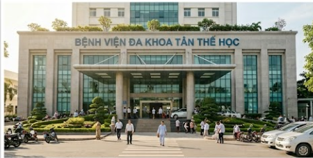
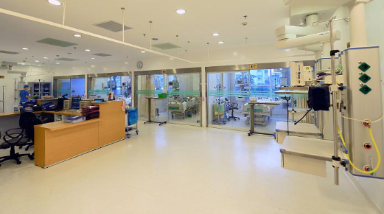
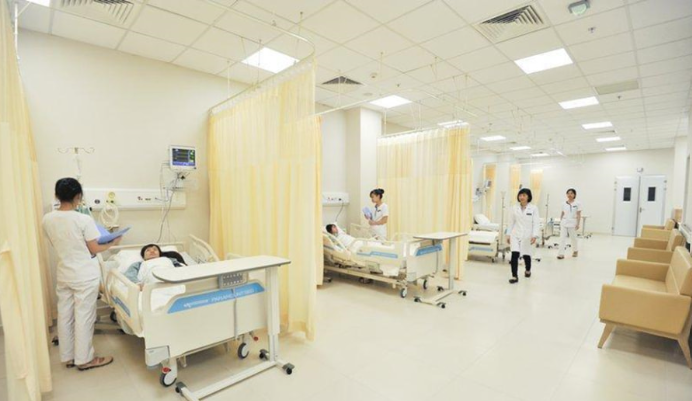

Bệnh viện Đa khoa Tiên Thể Học hiện thân như một biểu tượng của sự hiện đại và chuẩn mực trong hành trình chăm sóc sức khỏe toàn diện. Nơi đây không chỉ sở hữu không gian y tế tân tiến, hệ thống quản lý thông minh vượt trội cùng những trang thiết bị công nghệ đỉnh cao, mà còn là nơi dừng chân của những "người thầy thuốc" tâm huyết, giàu kinh nghiệm và tận tụy với nghề. Trên hành trình phụng sự sự sống, chúng tôi kiên định đặt sức khỏe và nụ cười an tâm của bệnh nhân lên vị trí tối thượng, liên tục chuyển mình, nâng cao chất lượng dịch vụ để chạm đến những nấc thang mới của sự hoàn hảo và lòng tin yêu.
Giám đốc Bệnh viện Đa khoa Tiên Thể Học
Với hơn 35 năm kinh nghiệm trong lĩnh vực y tế, ông đã có nhiều đóng góp trong công tác quản lý, nâng cao chất lượng khám chữa bệnh và phát triển bệnh viện theo hướng hiện đại hóa.
Y Bác sĩ
Chuyên khoa
Bệnh nhân
Năm hoạt động
Hướng tới tương lai của nền y học hiện đại, Bệnh viện Đa khoa Tân Thể Học khát khao vươn mình trở thành biểu tượng y tế hàng đầu Việt Nam. Chúng tôi tiên phong kiến tạo một hệ sinh thái chăm sóc sức khỏe thông minh, nơi công nghệ đột phá hòa quyện cùng tri thức y khoa để mang lại những giá trị sống đích thực cho cộng đồng.
Mang trên vai sứ mệnh phụng sự sự sống, Tân Thể Học cam kết trao gửi dịch vụ y tế chuẩn mực cao: an toàn tuyệt đối, tối ưu hiệu quả và đong đầy lòng nhân ái. Chúng tôi nỗ lực biến mỗi hành trình chữa lành thành một trải nghiệm ấm áp, thân thiện, trở thành điểm tựa sức khỏe vững chãi và đáng tin cậy cho mọi người dân.


